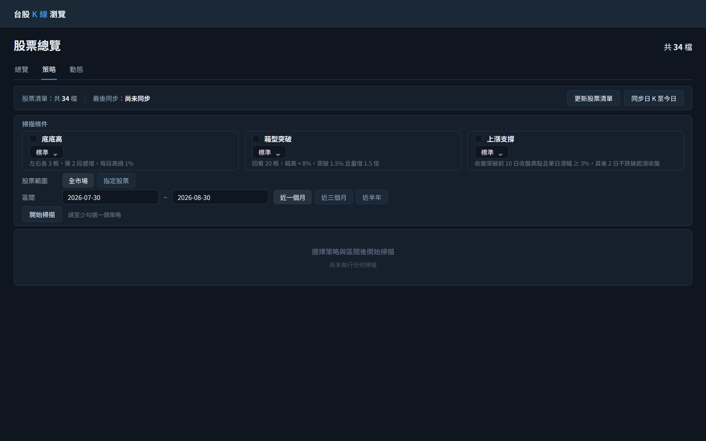
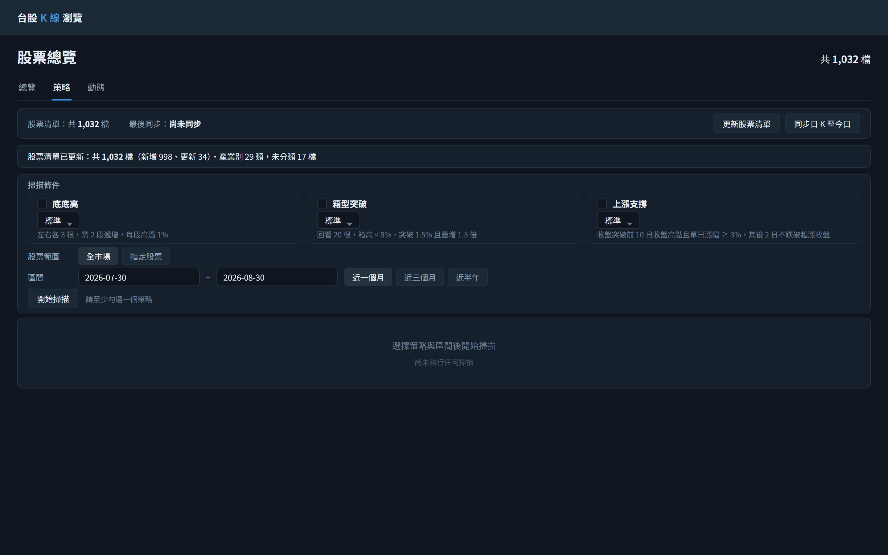
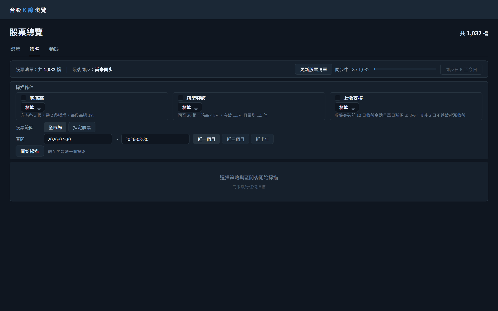
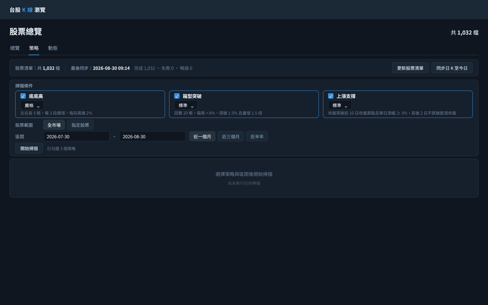
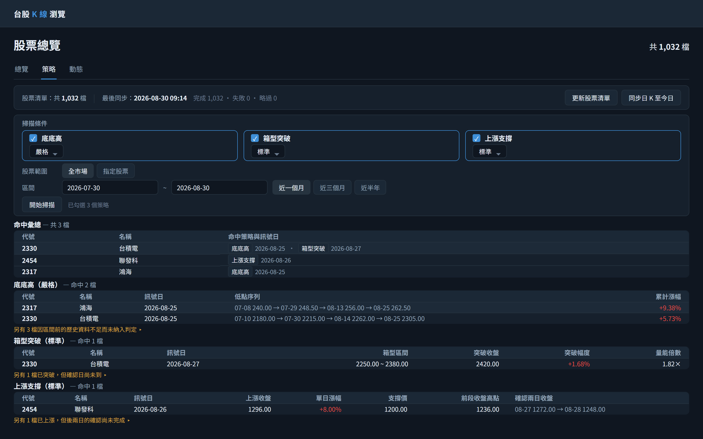
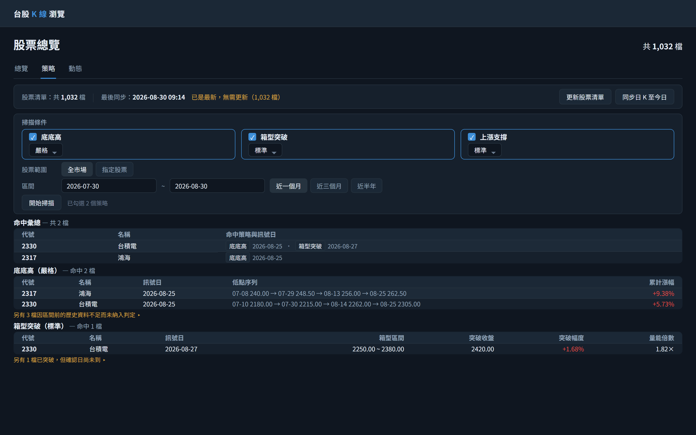

/api/strategies取策略清單與三段靈敏度的說明文字/api/stocks/sync/progress?jobType=PRICE_BACKFILL取 lastSyncedAt 顯示最後同步時間/api/stocks?page=1&size=1只取 total 顯示「共 34 檔」
/api/stocks/universe/import無 body；此端點即是向交易所抓取上市股票清單的起點，同時匯入官方產業別，回應的 totalActiveCount／insertedCount／updatedCount／industryCount／uncategorizedStockCount 組成摘要/api/stocks?page=1&size=1匯入完成後重取 total 更新「共 N 檔」
/api/stocks/sync/backfillbody startDate=2026-01-01, endDate=2026-08-30, catchUp=true，不帶 stockIds 代表全市場（即匯入後的 1,032 檔）/api/stocks/sync/progress?jobType=PRICE_BACKFILL每 5 秒輪詢更新進度
/api/stocks/sync/progress?jobType=PRICE_BACKFILL同步完成後重取 lastSyncedAt
/api/strategies/scanbody strategies=[底底高/STRICT, 箱型突破/STANDARD, 上漲支撐/STANDARD], startDate=2026-07-30, endDate=2026-08-30，不帶 stockIds 代表全市場
/api/stocks/sync/backfillbody startDate=2026-01-01, endDate=2026-08-30, catchUp=true；回應 targetCount=1032、caughtUpCount=1032，代表本次一檔都不需抓取/api/stocks/sync/progress?jobType=PRICE_BACKFILL取 lastSyncedAt，時間為 Asia/Taipei